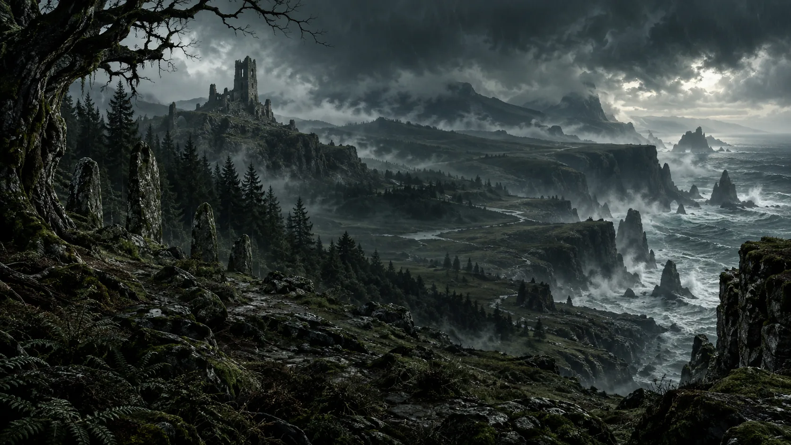

Cerrigar
Ein trutziges Hochland-Städtchen, das zwischen Handel, altem Clan-Recht und dem wachsenden Misstrauen gegenüber Fremden vermittelt.
Eine wilde Küstenlandschaft aus uralten Wäldern, schroffen Klippen und den vergessenen Heiligtümern der Druiden. In Scosglen ringen Druiden, Clans und übernatürliche Mächte um ein Land, dessen Geschichte tiefer reicht als seine moosbedeckten Steine.
Scosglen ist die alte Heimat der Druiden. Ihre Vorfahren trennten sich einst von den barbarischen Stämmen des Nordens und folgten Vasily in die Wälder, wo sie eine eigene Kultur entwickelten. Statt Städte zu errichten, entstanden über das Land verstreute Druidenkollegs und heilige Orte, an denen die Bewohner ihre Verbindung zur Natur und zu den Geistern pflegten.
Diese Natur ist allerdings keineswegs friedlich. Nebel, Dauerregen und dichte Wälder verschlucken Reisende, Werwölfe und Khazra durchstreifen das Hinterland und an den Küsten steigen die Ertrunkenen aus dem Meer. In jüngerer Vergangenheit wurde Scosglen zudem vom Dämon Astaroth verwüstet. Die sogenannte Zeit der Asche hinterließ tiefe Narben – und führte dazu, dass sich die Kathedrale des Lichts zeitweise in der Region etablierte, was viele Druiden als Einmischung in ihre uralten Traditionen betrachteten.

Ein trutziges Hochland-Städtchen, das zwischen Handel, altem Clan-Recht und dem wachsenden Misstrauen gegenüber Fremden vermittelt.
Verstreute Kreise aus verwittertem Stein, an denen Druiden seit Generationen mit den Geistern der Natur in Verbindung treten.
Schroffe Steilküsten, an denen Nebel, Gezeiten und alte Warnungen der Fischerdörfer eng verwoben sind.
Die Clans Scosglens leben von Fischfang, Viehzucht und dem, was der zähe Boden hergibt. Druiden vermitteln zwischen Menschen und Natur, werden von manchen verehrt und von anderen mit Argwohn beobachtet.
Wetter und Wildtiere verhalten sich zunehmend unberechenbar. In den Wäldern und an einsamen Küstenabschnitten haben sich Hexenzirkel eingenistet, die alte, vor-druidische Rituale wiederbeleben – zu erkennen an verdorbenen Hainen und plötzlich verstummten Dörfern.
Scosglens Druidentum gilt als eine der ältesten noch lebendigen Traditionen Sanktuarios – enger mit dem Land verbunden als mit Kathedrale oder Horadrim.
Diese Distanz zu den zentralen Glaubensmächten Sanktuarios bewahrte eigene Bräuche – ließ die Region aber auch auf sich allein gestellt.
Wo kein zentraler Glaube wacht, finden ältere und dunklere Kulte leichter Zulauf – eine Schwäche, die sich in jüngerer Zeit immer deutlicher zeigt.